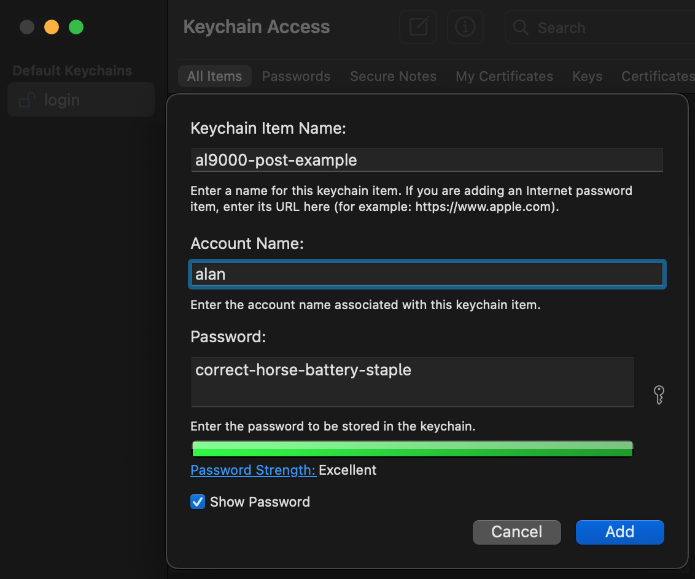
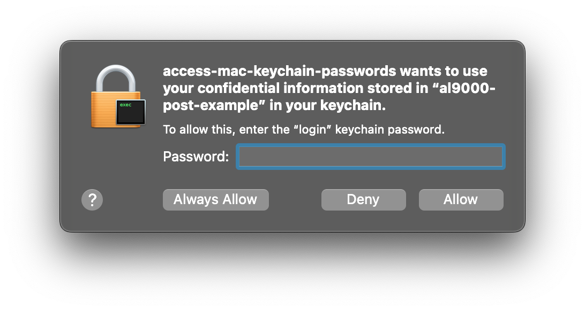

Access Mac Keychain Access Passwords from a Rust App
I use the built-in macOS Keychain Access app to store credentials
for my various scripts and tools. I start off by creating
a New Password Item... from the Keychain Access menu
and filling in the details:

Then, I use this rust code to pull in passwords when I need them:
use Result;
use get_generic_password;
name = "access-mac-keychain-passwords"
version = "0.1.0"
edition = "2024"
anyhow = "1.0.102"
security-framework = "3.7.0"
Assuming I click "Always Allow" when I enter the proper password Keychain Access provides the requested password back to the app. From that point forward the app can get the password again without triggering the prompt.
It's hard to beat.
-a
Notes
-
I've been using Keychain Access for ages. There's a new Passwords app too. The OS keeps prompting me to use it:

I assume I'll be able to set up a similar system with it. I just haven't dug into it yet.
-
I'm using the security_framework crate to handle communication between my app and Keychain Access. It's got north of 200 million downloads on crates.io. I'm using that as social proof that it's a good library to go with.
-
The security_framework crate works with Windows and Linux password managers too.
-
The
correct-horse-battery-staplepassword is from this XKCD comic which shows you why passwords with words are better than ones with a bunch of random characters.